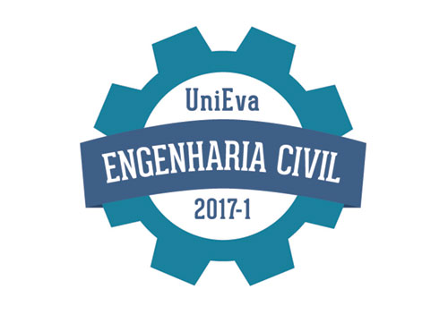
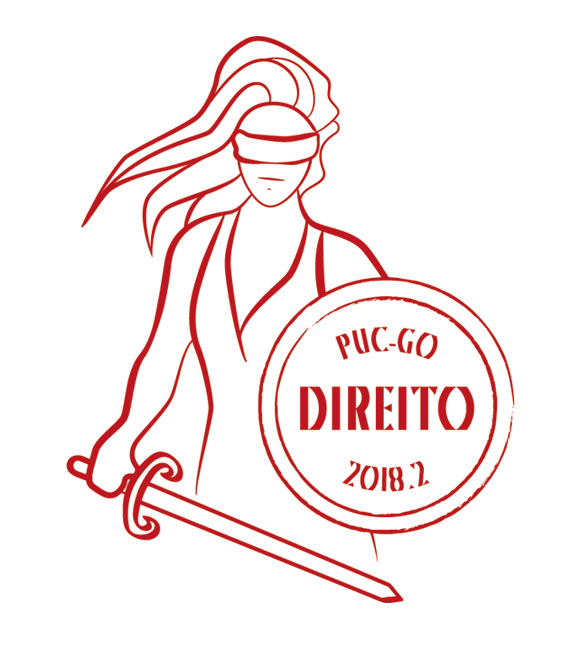
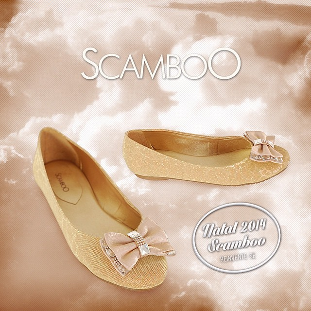
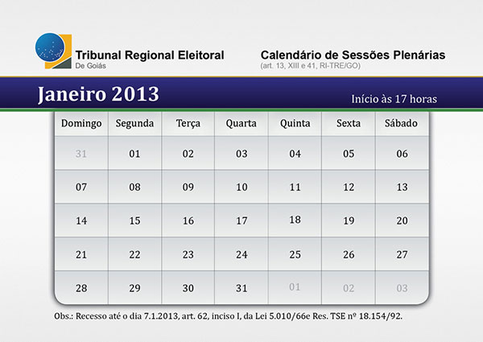
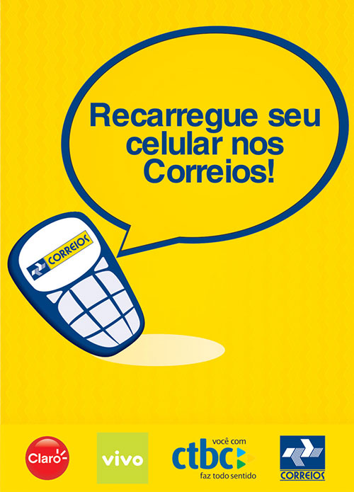
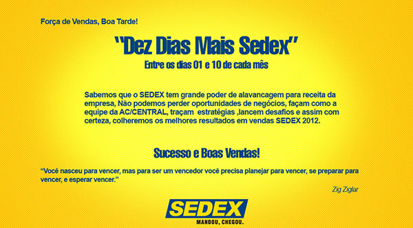
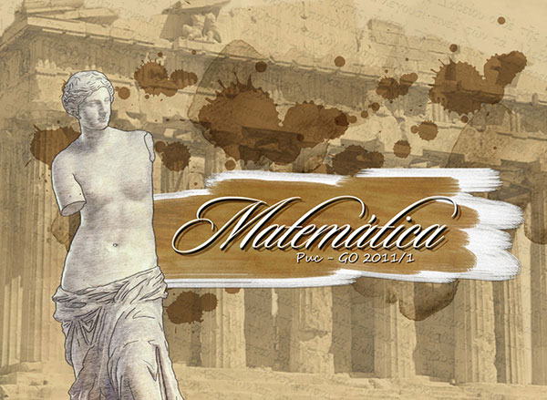
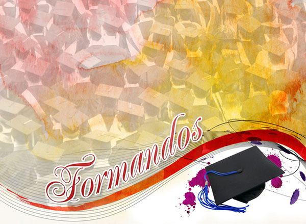
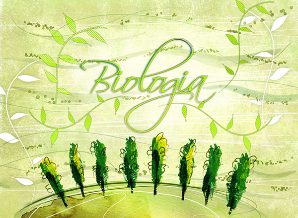
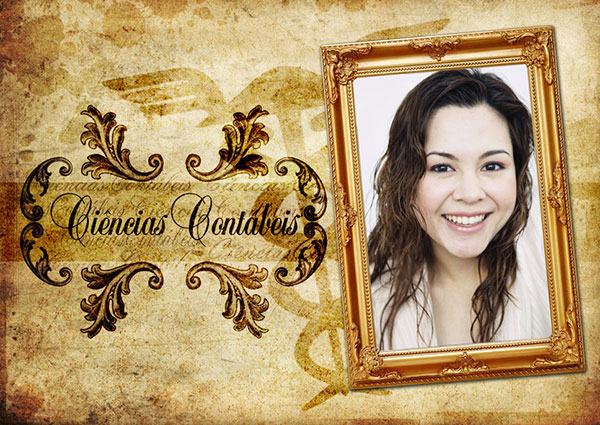

Estágios parte 2
B2 Agência
Tive uma breve passagem pela B2 Agência de outrubro a dezembro de 2014, onde minha função era criar símbolos que representassem as turmas de formatura da empresa e todo material gráfico que elas demandassem. Além de também criar imagens para posts nas rede sociais de empresas como a ScamboO.





TRE-GO
Trabalhei como estágiaria no Tribunal Regional Eleitoral de Goiás durante um ano (2013-2014), exercendo a função de criação de materiais impressos para a comunicação interna do Tribunal, incluindo folders, panfletos, livretos, convites, newsletter dentre outros.
Destaque para a diagramação da Revista Verba Legis 2013, uma publicação anual que reunia textos, artigos científicos, jurisprudência, matérias ou artigos que contam a história da Justiça Eleitoral.
Uma das vantagens deste estágio é que parte da produção de impressos era feita dentro do próprio TRE, o que me fez aprender muitas coisas envolvendo planejamento, fechamento de arquivo, aproveitamento de material e processos de impressão.


Correios
Nos Correios meu trabalho era principalmente a criação de selos personalizados além da elaboração de cartazes, banners e newsletters para a comunicação interna e também nas Agências de Correios do estado.
Durante este período passei a entender melhor a importância do trabalho de identidade visual, trabalhando diariamente com a marca dos correios e também na produção de selos personalizados que envolvia principalmente o trabalho com as logos dos contratantes.


3ºG Convites
3G Convites fazia parte da 3º Graus formaturas e era responsável pelos convites para os formandos da empresa. Esse estágio foi minha primeira experiência profissional, que consistia basicamente na elaboração de layouts e diagramação de convites de formatura, além de esporadicamente atender os clientes.
Foi neste período que aprimorei minhas habilidades com Photoshop e principalmente o InDesign.




